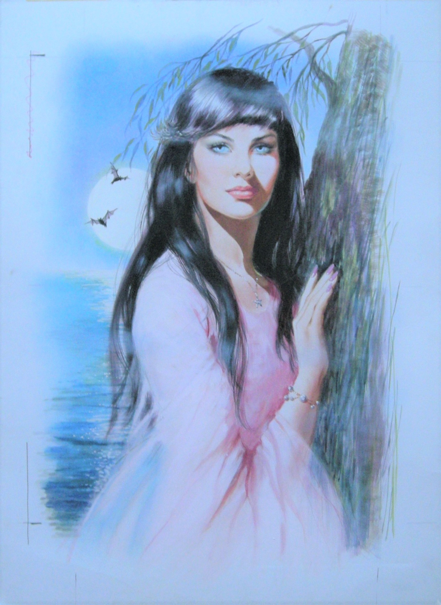

Shirley Bellwood
1931 – 2016
Artist Biography
Shirley Bellwood was born in Pool in Wharfedale, Yorkshire and attended Leeds College of Art. She later lived in Malvern, Worcestershire. Bellwood was an accomplished illustrator and portrait painter but is best known for her work on girls’ comics. This began in the 1950s and included titles such as Valentine, Roxy, Sally, Jinty and, most famously, Misty. The Misty character, a narrator for the comic, was based on an idealised self-portrait of Bellwood. Outside of the comics world she drew illustrations for numerous books and publishers, notably The Folio Society and Heron Books. In addition, she exhibited portraits at the Contemporary Portrait Society and the Royal Society of Portrait Painters. Her commissions included those of two Speakers of the House of Commons, George Thomas and Bernard Wetherill.

Untitled